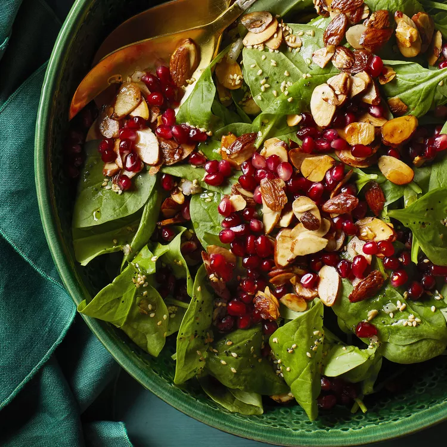

A so-simple homemade vinaigrette with crunchy almonds and pomegranate arils will have even the veggie-haters reaching for seconds. This Allrecipes Magazine recipe is based on Jamie's Cranberry Spinach Salad.

Prep timeline
Prep Time:
10 min
Cook Time
5 minu
ToTal Time : 20 min
Serving: 12
Yield: 12 Servings
Ingredients
1 tablespoon butter
⅓ cup sliced almonds
¼ cup vegetable oil
2 tablespoons white sugar
2 tablespoons white wine vinegar
2 tablespoons cider vinegar
1 tablespoon sesame seeds, toasted
1 ½ teaspoons poppy seeds
1 teaspoon minced onion
⅛ teaspoon paprika
Direction
Melt butter in a small saucepan over medium heat. Add almonds; cook, stirring frequently, until lightly toasted.
Whisk oil, sugar, vinegars, sesame seeds, poppy seeds, onion, and paprika together in a bowl for the dressing.
Toss spinach, toasted almonds, and pomegranate arils together in a large bowl. Drizzle with dressing and toss to coat.